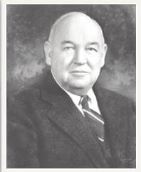

Because a great company is built brick by brick
| Who would have thought that a “Miller-built home” would be the place to be, back in 1912 when it all first started? Who would have thought that the $2000 that William C. and Allison N. Miller’s mother gave them, would become just the start of something so innovative, even by today’s standards? Having a “Miller-built home” today is still seen as a noteworthy accomplishment, especially in Washington, DC. Originally the homes of the upper middle class in their newer years, to becoming homes to those whose names we still speak, such as Richard Nixon and George H. W. Bush, one can find these homes encompassed within neighborhoods such as Wesley Heights or as far north as Spring Meadow in Darnestowne, MD. Wesley Heights itself was started in 1923, just 11 years after the Miller brothers began their venture into home development. Once nothing more than nearly empty acreage, having been abandoned due to financial difficulties the previous owner encountered, it became a thriving community of over 400 homes. In 1927, the Miller brothers add a community center to Wesley Heights, following the teachings of their “developing mentor”, J.C Nichols, who taught that community had everything to do with coming together for all occasions. Wesley Heights saw its abundance of Christmas and New Years’ parties, Baby Parades, community outings, and overall carried a “together we stand” atmosphere. It was also due to Wesley Heights that the Miller brothers began to pave their own roads, and in the process, created one of the first “bus-lines” in the area. It ran from Wisconsin Ave, to New Mexico and Klingle St. 1929 sees the beginning of Spring Valley, built adjacent to Wesley Heights. It, like its predecessor, saw large, beautiful homes surrounded by nature. The homes built by the Miller family, added to in these years by the children of the Miller brothers, were built with their surroundings in mind. Instead of destroying a stream running through a yard, the men would design a home and yard meant to include the stream, thus preserving the area’s natural beauty. They were even among the first to run the electrical lines below ground when building the homes, so as to not take away from either the aesthetic appearance, or the homes’ values. From January of 1933 to January of 1936, the W.C. & A.N. Miller company received biennial awards for merit and distinction in architecture among residences in Washington, DC. One of the first residences to receive such an award was 4320 Cathedral Ave, in Wesley Heights. The second to win the merit award was located in Spring Valley. | The 1940’s saw the Miller company develop new business buildings at 4860 Massachusetts Ave (at the time, it housed a Magruder’s), 4820 Massachusetts Ave, the corner of 49th St and Massachusetts Ave, and last, but certainly not least, development on Sumner Place began development. By the early 1950’s, the company had sadly bid farewell to both of the original Miller brothers; William passing away in 1939, and Allison passing away in 1951. Yet, their children, and soon their grandchildren, carried on these men’s legacies. Spring Hill and Potomac Falls were taken from the drawing tables to the lands in 1960. Spring Hill now contains 71 Miller-built homes, Potomac Falls containing no less than 250. Only 11 years later, in 1971, the community called Overlook is begun, and in 1975, Spring Meadow goes from being an idea to reality in Darnestowne, MD. The 1990’s finds W.C. & A.N. Miller Realtors appointed by “Christie’s”, the world’s oldest fine arts auctioneer, and Christie’s Great Estates, the largest network of independent real estate brokers specializing in the sale of important properties, as Affiliate Broker for the District of Columbia and Montgomery County. In 2002, on April 24th, Mayor Anthony Williams declares it “W.C. & A.N. Miller Day”, due to all the charitable activities, as well as both home and business development. The W.C. and A.N. Miller company has been noted by this proclamation has having served “a key role over its long history in shaping the appearance and character of many of Washington’s most prominent neighborhoods.” The W.C. & A.N. Miller company is still running strong today. Between welcoming the new Chief Executive, Robert Miller, and continuing with the vision and support of all those within the company, the future is looking brighter than ever. |